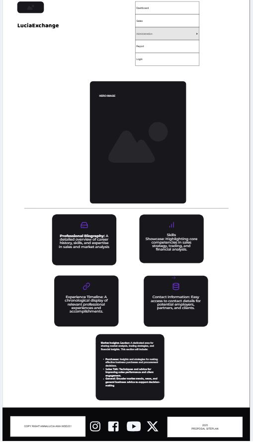

Site Name
LuciaExchange
Rationale:
The name "LuciaExchange" conveys expertise and competitive advantage in financial markets. "Exchange" directly relates to stock exchange and trading activities, it suggests superior insight and strategic advantage. "Lucia" establishes credibility and seriousness in the business and financial sectors. This name is memorable, industry-relevant, and communicates the value proposition of expert market analysis and sales strategy.
Optional domain availability: luciaexchange-pro.com or luciaexchange.io
Site Purpose
LuciaExchange serves as a comprehensive digital portfolio and professional hub showcasing expertise in sales strategy, stock market analysis, trading, and business development. The site aims to establish credibility and attract potential employers, business partners, and clients by providing:
- A detailed professional background and career trajectory in financial markets
- Demonstration of sales achievements and market analysis capabilities
- Insights into trading strategies and market understanding
- A timeline of relevant professional experiences and accomplishments
- Clear communication of core competencies in client relations and business strategy
Target Audience
The primary target audience for LuciaExchange includes:
- Potential Employers: Hiring managers and recruiters in finance, sales, and business development sectors seeking candidates with proven expertise in market analysis and trading strategies.
- Business Partners: Companies and professionals looking for collaboration opportunities in sales strategy, market insights, and financial analysis.
- Clients: Individuals and organizations interested in leveraging expert market analysis and trading strategies to enhance their financial decision-making and investment outcomes.
Site Goals
- Showcase professional expertise in sales strategy, stock market analysis, and trading.
- Establish credibility and attract potential employers, business partners, and clients.
- Provide a clear and concise overview of skills, experiences, and achievements.
- Facilitate easy navigation and access to relevant information.
- Encourage engagement through contact options and calls to action.
Site Layout
The site will feature a clean, professional dashboard design with intuitive navigation. Key sections will include:
- Dashboard: The main landing page showing key metrics, quick links, and an overview of your business activity.
- Stock: Track inventory levels, product details, and stock movements for efficient management.
- Administration: Manage user accounts, permissions, and system settings for secure and smooth operation.
- Report: Generate and view business reports, analytics, and performance summaries.
- Log out: Securely exit the dashboard and end your session.
Key Features
- Professional Biography: A detailed overview of career history, skills, and expertise in sales and market analysis.
- Skills Showcase: Highlighting core competencies in sales strategy, trading, and financial analysis.
- Experience Timeline: A chronological display of relevant professional experiences and accomplishments.
- Market Insights Section: A dedicated area for sharing market analysis, trading strategies, and financial insights. This section will include:
- Purchases: Insights and strategies for making effective business purchases and procurement decisions.
- Sales Talk: Techniques and advice for improving sales performance and client engagement.
- General: Broader market trends, news, and general business advice to support decision-making.
- Contact Information: Easy access to contact details for potential employers, partners, and clients.
Color Scheme
The color palette is carefully selected to convey professionalism, trustworthiness, and clarity. The primary colors include:
- Navy Blue (#1e3a5f): Represents professionalism, stability, and trust.
- Gold (#d4af37): Symbolizes success, achievement, and high value.
- Light Slate Gray (#f4f4f4): Provides a clean, neutral background for content.
- White (#ffffff): Ensures clarity and readability of text and elements.
- Dark Slate Gray (#2a4a6f): Used for accents and to create visual hierarchy.
Typography
The typography system uses professional, highly readable fonts to ensure clarity and enhance the user experience. The primary font choices include:
- Primary Font - Bricolage Grotesque: A modern sans-serif font used for headings and key text elements to convey professionalism and clarity.
- Body Font - Open Sans: A clean and highly legible sans-serif font for body text, ensuring readability across devices.
- Monospace Font - Fira Code: Used for code snippets or technical content, providing a clear distinction from regular text.
Wireframes
Wireframes will be created to visualize the layout and structure of the website for both desktop and mobile viewports. These wireframes will outline the placement of key elements such as the header, navigation menu, content sections, and footer.
Desktop / Tablet View (≥768px)

Mobile View (<768px)
